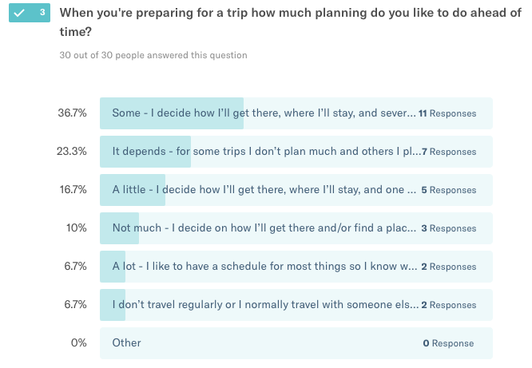
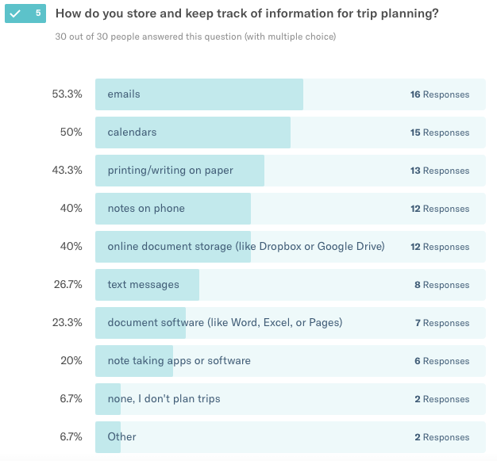
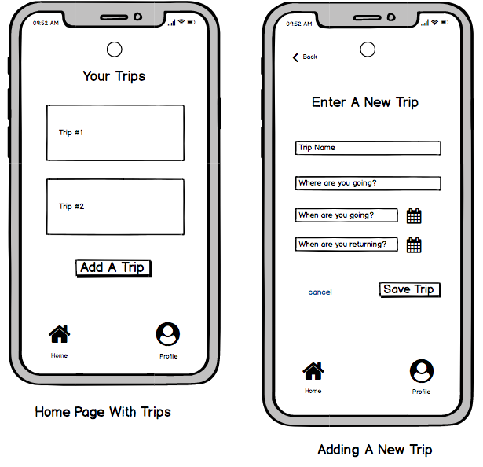
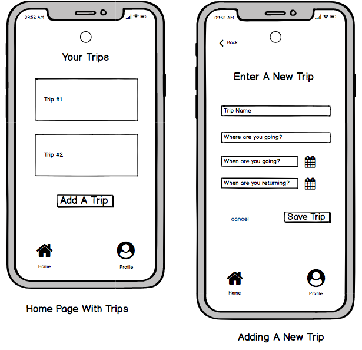
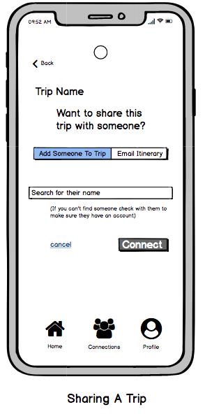
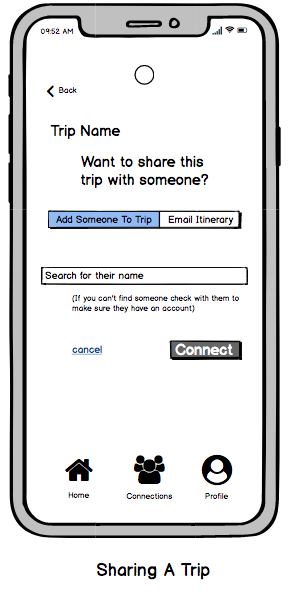

Early Research and Findings: Do other people have issues with trip planning?
Does anyone else have this problem?
I started this process knowing that I’d like a better way to keep track of all of my trip information. I
want an app that lets me do trip planning from the vague “Top 10 Things To Do In ______” Pinterest
posts all the way to the specifics of actually being on the trip. My early research focused on whether this
is something other people also want.
Survey
I made a survey on Typeform to gather general trip
planning information. You can
view the questions I asked on this Google doc or see the survey on Typeform.
My only criteria for survey participants was that they've planned a trip before, so I didn't focus much on
demographics. I asked how old they were (to give context to the answers), and how often they went
on trips. The rest of the questions asked about habits and processes for organizing trip information.
Here are the main things I learned:
- A lot of things about the trip planning process are less than ideal, so there are a lot of opportunities
to make improvements. One of my survey questions asked about general trip planning challenges and the responses
ranged from long immigration lines to the reliability of reviews.
- Most respondents do at least some trip planning in advance (“some” in the survey meant having their
transportation, lodging, and several things to do planned in advance).
- Information overload is an issue, both in the context of figuring out where to look for the best
flights/hotels and also in keeping track of the information once they’ve booked their trip.
- Respondents find it challenging to plan if they’re traveling with groups (this wasn’t something I had
specifically asked about - several people included it in their open responses).


Interviews
After doing the survey I wanted to ask some follow up questions to get more specific info, so I did interviews
with five people who had filled out the survey.
I asked open-ended questions about trip planning, and also talked about how they deal with group travel,
since I didn't ask any questions about that in the survey.
Direction After Early Research
The answer to my original question “Does anyone else have this problem?” is yes, so I know that’s a place
to start, but I learned that most people don’t want to keep track of everything from the beginning of
trip planning. Most people said they only want the information they’ll actually need on the trip.
Responses to an open-ended question in the survey about trip planning challenges included things like:
“everything is booked separately, so it can be hard to have
a single snapshot of your whole itinerary unless you make something yourself - Survey Respondent #2
and
“Keeping all of the information organized. Especially
if its a trip with multiple people and we booked separate flights. Sometimes we have taken turns booking
accommodation so the confirmations are with different people - Survey Respondent #13
My original hypothesis was to have this app be sort of a Google Drive type place for saving your own trip
information, but after talking with potential users it sounds like having a social aspect could be helpful.
If people can connect their plans to their friend’s plans it would make it easier to plan a group trip and
keep track of everyone’s information.
In the interviews I asked how people currently keep track of group trips and it sounds like Google Docs is
the most common place:
“Most recently for a trip with my two best friends, we split
planning responsibilities. One person focused on restaurants and dining, one person booked lodging, and
one person planned all activities/sightseeing. We shared all information in a shared Google doc. - Interviewee #2
and
“My last group trip we had a google doc where everyone
contributed information and things they wanted to do and see. Usually, when we are in the country we have
a group chat happening on messenger. We all send links to restaurants and sights/activities (from google
maps) and everyone decides together which ones look best. - Interviewee #4
Another thing I asked people about in the interviews was whether they brought a laptop on trips and whether
they got some kind of data plan for international travel. I wanted to see if this was something people would
want as a website (because all of them said they do at least of their trip planning on a laptop or desktop).
The general consensus was that they sometimes bring a laptop depending on the length of the trip and where
they're going/staying. Four out of five said they've had a data plan on international trips in the past,
but that they don't always get one due to the extra cost.
All five of the interview participants said they bring their phone on trips, so it makes the most sense
to have this be an app that can store information without them needing to be online to use it.
TL;DR - I had 29 people complete a survey and I did 5 interviews to get more information. The maim
thing I learned is that people are overwhelmed with the amount of things there are to keep track of when
they're planning a trip. For this project I’m focusing on creating an app to organize trip documentation and
information, and share it easily with the people you're traveling with.


 



 
